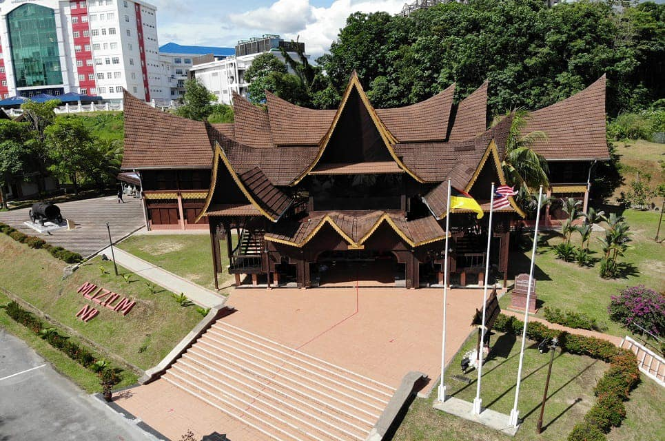
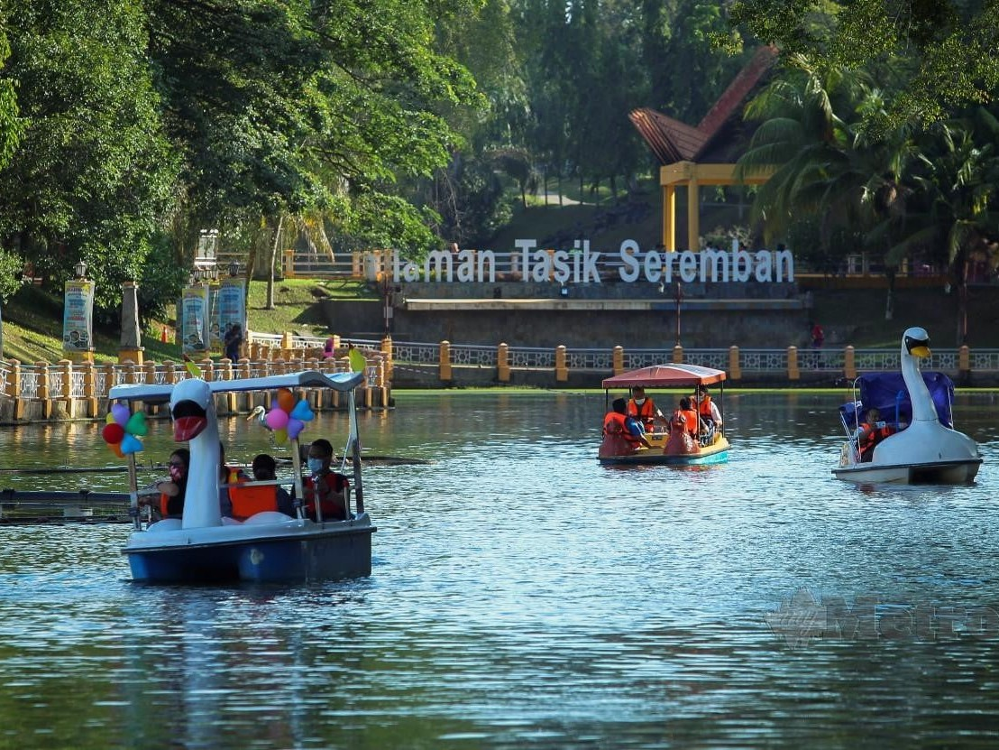

Seremban, Negeri Sembilan
Seremban is a charming town known for its rich culture, delicious local cuisine, and warm hospitality. As the capital of Negeri Sembilan, it boasts beautiful parks, historical landmarks, and vibrant markets, making it a delightful destination for both residents and visitors.
About Seremban

Seremban is renowned for its unique Minangkabau culture, evident in its distinctive architecture and traditional practices. This cultural heritage is reflected in the graceful roofs of local buildings, characterized by their horn-like shapes, which tell the story of the Minangkabau people's history and values. The intricate wood carvings and vibrant colors further enhance the architectural beauty, making Seremban a visual delight for visitors. The town's vibrant atmosphere is complemented by its rich tapestry of cultural events and festivals, showcasing local art, music, and dance. Events such as the annual Minangkabau Festival bring the community together, celebrating traditions that have been passed down through generations.
In addition to its cultural offerings, Seremban boasts several attractions that highlight its natural beauty and historical significance. The Seremban Lake Garden is a serene oasis where families can enjoy picnics and leisurely strolls, surrounded by lush greenery and picturesque walking paths. This recreational area features scenic views, tranquil waters, and vibrant floral displays, making it a perfect spot for relaxation. The Negeri Sembilan State Museum provides insights into the area’s rich history, showcasing artifacts and exhibits that illustrate the heritage of the Minangkabau people. Visitors can explore traditional crafts, costumes, and historical relics that narrate the story of the state.
Seremban is also home to various parks and nature reserves, such as the Taman Tasik Seremban, where outdoor enthusiasts can engage in activities like jogging, cycling, and birdwatching. For those seeking adventure, the nearby hills offer hiking trails with stunning panoramic views of the town and surrounding landscapes. Whether you’re exploring the vibrant local markets filled with handicrafts and souvenirs or enjoying the scenic views from nearby hills, Seremban provides a dynamic experience that captures the essence of Malaysian heritage. The warm hospitality of the locals adds to the charm, inviting visitors to immerse themselves in the unique culture and traditions that define this enchanting town.